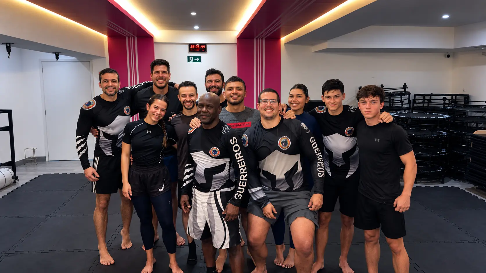
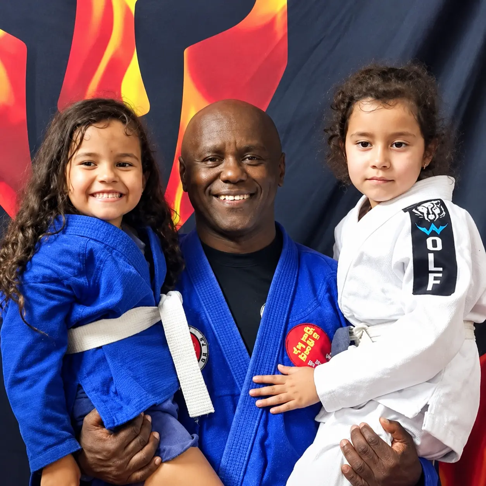
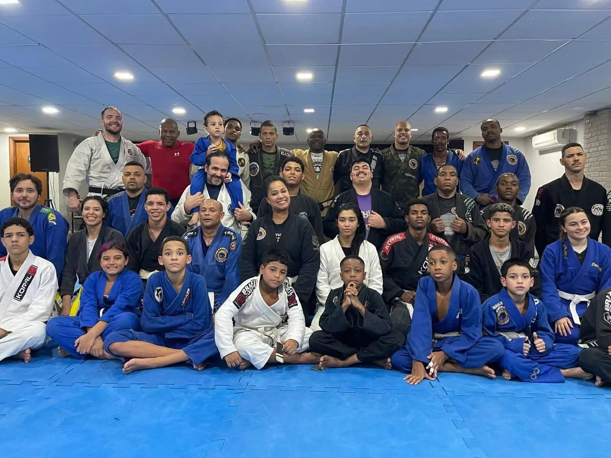
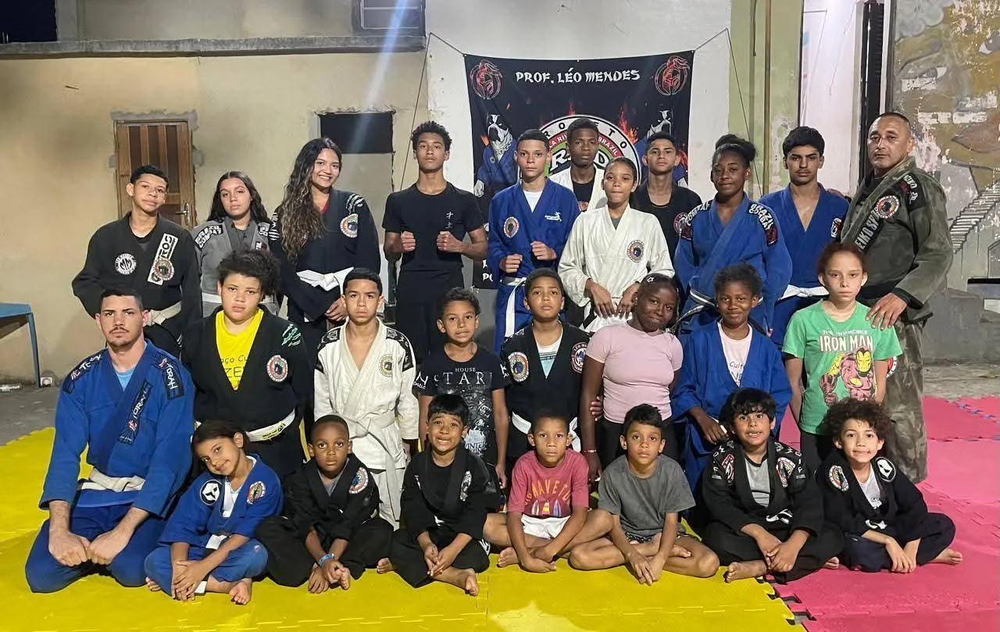
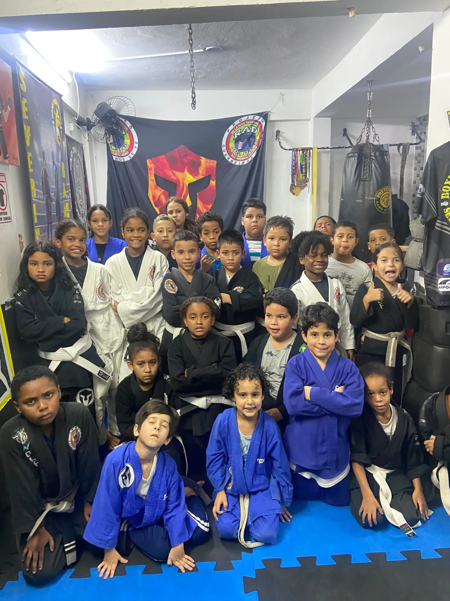
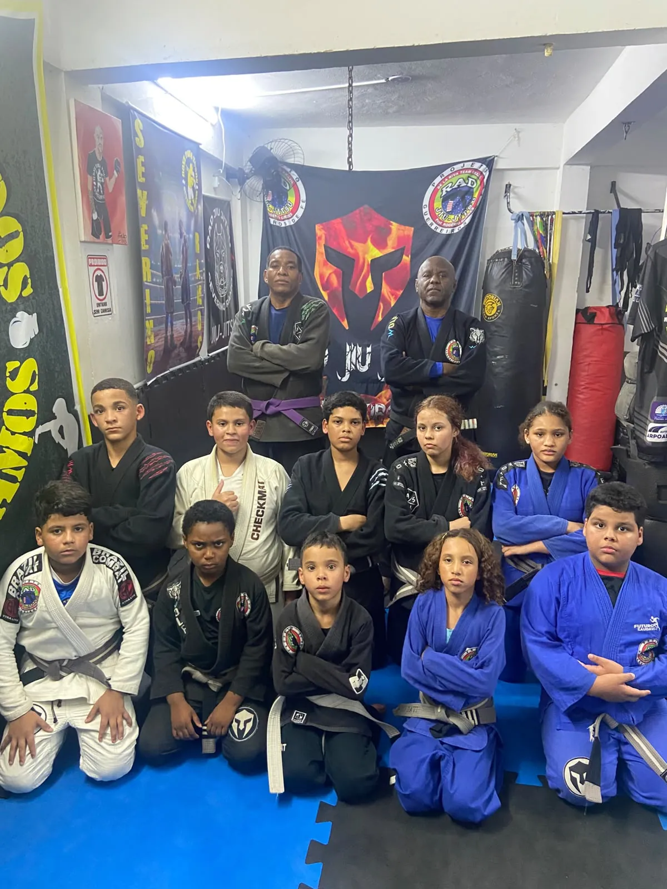
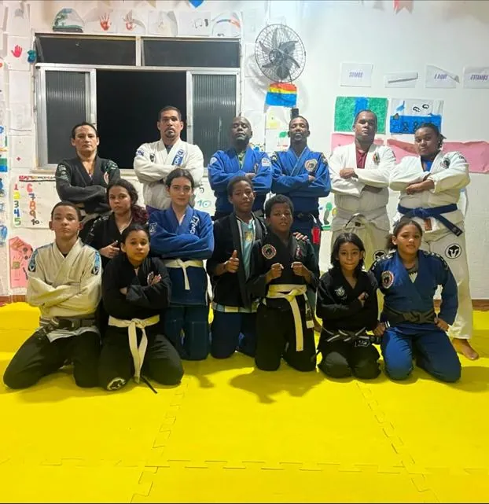

Respeito
Ao colega, ao professor e ao tatame, em todos os treinos.

Acreditamos que o Jiu-Jitsu vai muito além do esporte. Nosso projeto oferece oportunidades para crianças, jovens e adultos que desejam transformar suas vidas por meio da disciplina, do respeito e da dedicação.
Alunos treinando hoje
Faixas-pretas formados
Polos no RJ e na BA

Fundada em 2003 pelo professor Rogério Guedes, conhecido como RAD, a RAD Jiu-Jitsu nasceu com o propósito de transformar vidas por meio do esporte.
Após conquistar sua faixa-preta sob a orientação do Mestre Ricardo De La Riva, Rogério decidiu retribuir as oportunidades que recebeu,
criando o Projeto Guerreiros de Fé para oferecer aulas gratuitas de Jiu-Jitsu a pessoas sem condições financeiras de frequentar uma academia.
O projeto teve início na comunidade do Pavãozinho, em Copacabana, e, após uma pausa em 2008, retomou suas atividades em 2009 na comunidade Santa Marta, em Botafogo.
Foi nesse local que a iniciativa cresceu, formando diversos atletas e faixas-pretas que hoje também contribuem para dar continuidade ao trabalho.
Atualmente, a RAD Jiu-Jitsu conta com polos no Rio de Janeiro e na Bahia, reunindo mais de 600 alunos e 57 faixas-pretas formados pelo projeto. Mantido principalmente por colaborações e doações de pais, amigos e alunos, o projeto segue firme em sua missão de promover inclusão social, disciplina e oportunidades, mostrando que o Jiu-Jitsu pode transformar vidas dentro e fora do tatame.
Rogério Guedes, o Rad, conquista a faixa preta pelas mãos do Mestre Ricardo De La Riva.
O Guerreiros de Fé começa no Pavãozinho, em Copacabana, com aulas gratuitas para quem não podia pagar uma academia.
Rad é campeão estadual na faixa preta pela CBJJO.
Depois de deixar o Pavãozinho em 2008, o projeto volta no Centro Esportivo Santa Marta, em Botafogo, onde cresce e forma muitos faixas-pretas.
Nasce o polo de Ibirataia, levando o projeto para fora do Rio de Janeiro.
Mais de 600 alunos no Rio e na Bahia, 57 faixas-pretas formados e professores da RAD ensinando em outros países.
Mais do que ensinar técnicas de luta, buscamos formar pessoas. Nosso trabalho é baseado em valores que fazem a diferença dentro e fora do tatame, incentivando o respeito, a disciplina, a solidariedade e a superação. Acreditamos que todos merecem a oportunidade de crescer, independentemente de sua realidade.
Ao colega, ao professor e ao tatame, em todos os treinos.
Constância nos treinos é o que transforma técnica em evolução.
Estar sempre disposto a aprender, independente da faixa.
Ninguém evolui sozinho. Treinamos juntos, dentro e fora do tatame.
Hoje melhor do que ontem, um treino de cada vez.
O tatame ensina que força sem respeito não leva a lugar nenhum.
As aulas são gratuitas, a partir de 5 anos. Não tem kimono? O projeto empresta ou doa. Para se inscrever, é preciso estar estudando e apresentar atestado médico.
Quero me inscreverTreinos, graduações e campeonatos. O dia a dia dos nossos polos, do Rio à Bahia.





Qualquer ajuda faz diferença na vida de um aluno, seja doando ou dedicando seu tempo.
PIX: radjiujitsubrasil@gmail.com
em nome de Rogério Guedes
Associe a sua marca a um projeto que forma cidadãos através do esporte.